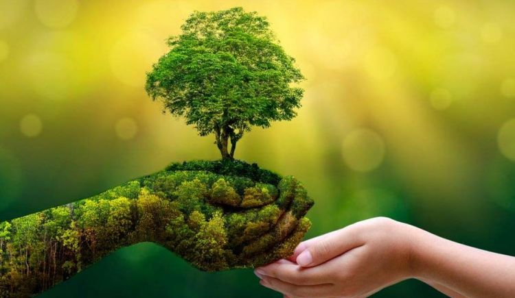

Be the change,Bring the change!
Green Planet is a leading environmental NGO in India working towards achieving the Sustainable Development Goals (SDGs) through tree plantation, urban biodiversity conservation, water bodies restoration, sustainable solutions, and environmental research and awareness. We are a rare blend of resources equipped with traditional wisdom and modern, innovative technologies to help corporate achieving their NET Zero Goal.
"पेड़ एक जीवन शैली है इसे काटो नहीं इसे बचाओ"
Green Planet began in early 2008 with the Go Green Ganesha campaign, in response to witnessing the usage of excessive amounts of PoP plastic to make Ganesha statues during the Ganpathi festival. Pradeep and Durgesh (Founders of Green Planet) believed that this is not the ideal way to celebrate because it is harmful to the environment and our health, and as ecofriendly alternatives already exist. And so, they initiated the Go Green Ganesha project within their locality, targeting schools, colleges and housing communities. Following the huge success and positive response towards this program, they began Go Green Kids. It was an innovative education initiative to sensitize and educate children towards environmental protection and improvement-with the motive that kids will teach their parents to go green in their everyday lives and be responsible towards nature. In 2010, Green Planet registered as an NGO and expanded to thousands of schools, colleges and housing societies, after which Zaroorat, Green Youth Green India and many more environmental projects began.
The passion to reduce pollution and support farmers through planting trees continued to drive Green Yatra towards mega projects in rural areas and mass tree plantations. With the realization that innovation is needed in the plantation field to respond to the need for nature in our urbanizing cities, the Miyawaki Dense Forestation method was adopted. Green Planet started with few trees and today continues to plant lakhs of trees every year. Our work aims to connect people with nature in urban spaces through tree plantations and rejuvenating the ecosystem. Our focus is to fight the climate crisis and therefore we are working to provide sustainable solutions for a greener world through our projects Ecosystem Rejuvenation (Air, Water, Soil) and Sustainable Solutions. We continue to involve communities, raise awareness, and encourage implementation on the ground, ultimately working together to create a healthy and pollution-free India.
We are registered with 12 A, 80G, FCRA and UNEP.